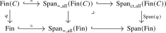
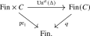
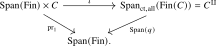
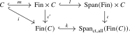
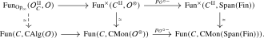
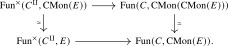
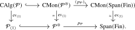

We now specialize the unfurling construction to construct cocartesian monoidal structures on \(\infty \)-categories with finite coproducts. Throughout, we will make use of the \(\infty \)-category of finite families from Construction 14.1.16: for an \(\infty \)-category \(C\), we write \(q\colon \Fin (C) \to \Fin \) for the cartesian unstraightening of the finite-product-preserving functor \(C^{(-)}\colon \Fin \catop \to \Cat _{\infty }\), \(I \mapsto C^I\), so that the objects of \(\Fin (C)\) are the finite unordered tuples \(\{x_i\}_{i \in I}\) of objects of \(C\).
Assume now that \(C\) admits finite coproducts. For every map \(f\colon I \to J\), the restriction functor \(f^*\colon C^J \to C^I\) admits a left adjoint \(f_!\colon C^I \to C^J\), which forms coproducts over the fibers of \(f\). These adjunctions satisfy the Beck–Chevalley condition. Indeed, consider a pullback square as in Definition 15.1.1 and a family \(A=(A_{y'})_{y' \in Y'}\). For every \(x \in X\), the Beck–Chevalley transformation is the natural isomorphism \[ (r'_!{l'}^*A)_x \simeq \coprod _{x' \in (r')^{-1}(x)} A_{l'(x')} \simeq \coprod _{y' \in r^{-1}(l(x))} A_{y'} \simeq (l^*r_!A)_x, \] where the middle isomorphism follows from the pullback property. Thus \(C^{(-)}\) is left adjointable, and we may apply contravariant unfurling.
Proposition 15.2.1. Let \(C\) be an \(\infty \)-category with finite coproducts. The unfurling of \(C^{(-)}\) is a finite-product-preserving functor \[ (C,\amalg ):=\Unf ^{\mathrm {L}}(C^{(-)})\colon \Span (\Fin )\longrightarrow \Cat _{\infty } \] which defines a symmetric monoidal structure on \(C\) whose unit is the initial object and whose tensor product is the coproduct.
Proof. By Corollary 15.1.4, the functor \(C^{(-)}\) extends to \(\Span (\Fin )\). To check whether it preserves finite products, recall from part (1) of Lemma 13.3.8 that the inclusion \(\Fin \catop \hookrightarrow \Span (\Fin )\) preserves finite products. Since this inclusion is the identity on objects, we may test whether the unfurling preserves finite products after restricting along it. By the last statement of Corollary 15.1.4, the resulting functor is the original functor \(C^{(-)}\), which preserves finite products by construction. This finishes the construction of the monoidal structure.
Given the description of coproducts in terms of left adjoints, we see that transport along \(\emptyset \to \lra {1}\) selects the initial object, while transport along the active span \(\lra {2}\xleftarrow {=}\lra {2}\xrightarrow {\nabla }\lra {1}\) is the binary coproduct. □
Definition 15.2.2 (Cocartesian monoidal structure). The symmetric monoidal \(\infty \)-category \((C,\amalg )\) from Proposition 15.2.1 is called the cocartesian monoidal structure on \(C\).
15.2.1 Cocartesian operads
The construction of the cartesian fibration \(q\colon \Fin (C) \to \Fin \) did not use the existence of finite coproducts in \(C\). Those coproducts were needed only to supply cocartesian transport along all morphisms of \(\Fin \) and thereby make \(q\) a Beck–Chevalley fibration. For an arbitrary \(\infty \)-category \(C\), we may still apply the span-category construction to \(q\). The resulting map need not be a cocartesian fibration over all of \(\Span (\Fin )\), but it retains the cocartesian lifts over inert morphisms required of an \(\infty \)-operad. We now make this precise.
Recall from Construction 14.1.16 that \(\Fin (C)\) admits finite coproducts, given by unordered concatenation of tuples, that \(q\) preserves them, and that a morphism \((f,(\phi _i)_{i \in I})\) of \(\Fin (C)\) is \(q\)-cartesian if and only if every \(\phi _i\) is an isomorphism in \(C\); we write \(\Fin (C)_{\ct } \subseteq \Fin (C)\) for the wide subcategory spanned by the \(q\)-cartesian morphisms.
Lemma 15.2.3. Let \(C\) be an \(\infty \)-category. Then the triple \((\Fin (C), \Fin (C)_{\ct }, \Fin (C))\) is an adequate triple. Furthermore, it is extensive in the sense of Definition 13.3.3.
Proof. The adequate triple is obtained by applying Proposition 15.1.9 to the cartesian fibration \(q\colon \Fin (C) \to \Fin \).
The cartesian straightening \(C^{(-)}\colon \Fin \catop \to \Cat _{\infty }\) of \(q\) preserves finite products by construction, while \(\Fin \) is extensive. The final assertion of Proposition 23.2.10 therefore shows that \(\Fin (C)\) is extensive.
The \(q\)-cartesian morphisms are closed under finite coproducts, and the morphisms \(\emptyset \to X\) and \(\nabla \colon X \sqcup X \to X\) are \(q\)-cartesian, by the componentwise description recalled above. The class of all morphisms has the same closure and containment properties automatically. Hence Lemma 13.3.4 shows that the adequate triple is extensive. □
Construction 15.2.4 (Cocartesian operad). Let \(C\) be an \(\infty \)-category. We define the \(\infty \)-category \(C^{\amalg }\) as \[ C^{\amalg } := \Span _{\ct ,\all }(\Fin (C)). \] Combining Lemma 15.2.3 with Lemma 13.3.8, we see that this is a semiadditive \(\infty \)-category, with finite products and finite coproducts both induced by the unordered concatenation of tuples in \(C\). We denote by \[ p_C^{\amalg }:= \Span (q)\colon C^{\amalg } \to \Span (\Fin ) \] the induced functor to \(\Span (\Fin )\), which preserves finite products.
Proposition 15.2.5. Let \(C\) be an \(\infty \)-category. Then the pair \((C^{\amalg },p_C^{\amalg })\) is an \(\infty \)-operad.
Proof. We have already argued that \(C^{\amalg } = \Span _{\ct ,\all }(\Fin (C))\) has finite products and that \(p_C^{\amalg } = \Span (q)\) preserves them, giving condition (1) of the definition. The objects in the fiber over a finite set \(I\) form the fiber \(\Fin (C)_I=C^I\). Moreover, by Lemma 13.1.13, a morphism over the identity span of \(I\) is represented by a span whose backwards leg is \(q\)-cartesian over \(\id _I\), hence an isomorphism, and therefore reduces to a morphism in \(C^I\). Thus the fiber of \(C^{\amalg }\) over \(I\) is \(C^I\), giving condition (2). For condition (3), consider objects \(X_i \in \Fin (C)\) and a morphism \(f\colon J \to I\) of finite sets. Then the lift \(\widetilde {f}\colon \prod _{i \in I} X_i \to \prod _{j \in J} X_{f(j)}\) in \(\Span _{\ct ,\all }(\Fin (C))\) is a backwards span of the form \[ \bigsqcup _{i \in I} X_i \xleftarrow {(f,(\id )_j)} \bigsqcup _{j \in J} X_{f(j)} \xrightarrow {(\id ,(\id ))} \bigsqcup _{j \in J} X_{f(j)}. \] The left-pointing morphism is \(q\)-cartesian and the right-pointing morphism is an identity. In particular, condition (4) of Theorem 15.1.7 only asks for cocartesian lifts of base changes of an identity, which are again isomorphisms; the remaining conditions follow directly from cartesianness and Lemma 15.1.8. Hence this span is \(\Span (q)\)-cocartesian, as desired. □
The proof only uses cocartesian lifts over inert morphisms, for which the forward leg of the displayed span is an identity. Thus it does not require the covariant transport \(f_!\) used in the full unfurling.
Definition 15.2.6 (Cocartesian operad). For an \(\infty \)-category \(C\), we refer to the \(\infty \)-operad \(\OpCocart _C := (C^{\amalg },p_C^{\amalg })\) from Proposition 15.2.5 as the cocartesian operad of \(C\).
Warning 15.2.7. In various sources, notably in Lurie (2017), no notational distinction is made between the \(\infty \)-operad \(\OpCocart _C\) and its total \(\infty \)-category \(C^{\amalg }\): both are denoted by \(C^{\amalg }\). Although the notation \(\OpCocart _C\) is slightly more verbose, we find it useful to distinguish between the operad and its total category.
The operad \(\OpCocart _C\) does precisely what we want it to do: its multimorphisms \((x_1, \dots , x_n) \to y\) are simply the morphisms \((x_1, \dots , x_n) \to y\) in \(\Fin (C)\), which correspond to tuples \((\phi _i\colon x_i \to y)\) of morphisms in \(C\). If \(C\) admits finite coproducts, cocartesian transport along the active fold map \(\lra {n}\to \lra {1}\) sends \((x_1,\dots ,x_n)\) to \(x_1\amalg \dots \amalg x_n\). Factoring through this cocartesian lift gives the familiar isomorphism \[ \Hom _C(x_1\amalg \dots \amalg x_n,y) \simeq \prod _{i=1}^n\Hom _C(x_i,y). \] The construction of \(\OpCocart _C\) retains the expression on the right even when the coproduct representing it does not exist.
Proposition 15.2.8. Let \(C\) be an \(\infty \)-category. Then the following conditions are equivalent:
- (1)
-
The \(\infty \)-category \(C\) admits finite coproducts;
- (2)
-
The cartesian fibration \(q\colon \Fin (C) \to \Fin \) is a cocartesian fibration;
- (3)
-
The functor \(p_C^{\amalg }=\Span (q)\colon C^{\amalg } \to \Span (\Fin )\) is a cocartesian fibration.
If these conditions hold, \(p_C^{\amalg }\) is the cocartesian unstraightening of the unfurling \((C,\amalg )\) from Proposition 15.2.1.
Proof. If \(C\) admits finite coproducts, we showed above that \(q\colon \Fin (C) \to \Fin \) is a Beck–Chevalley fibration. The construction in Theorem 15.1.3 identifies the cocartesian unstraightening of the unfurling from Proposition 15.2.1 with \(\Span (q)\). This proves that (1) implies (3), as well as the final assertion.
We next show that (3) implies (2). Recall from the dual of Lemma 23.1.15 that every \(q\)-cartesian morphism in \(\Fin (C)\) whose image in \(\Fin \) is an isomorphism is itself an isomorphism. Consequently, the square

is a pullback square. Since cocartesian fibrations are closed under pullback, (3) implies (2).
Finally, suppose that \(q\) is a cocartesian fibration. By Lemma 23.1.20, its cocartesian transport \(f_!\colon C^I \to C^J\) along a map \(f\colon I \to J\) is left adjoint to the cartesian transport \(f^*\colon C^J \to C^I\). For the map \(\emptyset \to \lra {1}\) this produces an initial object of \(C\), while for the fold map \(\lra {2} \to \lra {1}\) it produces binary coproducts. Thus \(C\) admits finite coproducts, proving that (2) implies (1). □
Thus, when \(C\) admits finite coproducts, the symmetric monoidal structure associated to \(\OpCocart _C\) is precisely the cocartesian monoidal structure constructed by unfurling at the beginning of the section.
Remark 15.2.9. Note that all the steps in the construction of \(\OpCocart _C = (C^{\amalg },p_C^{\amalg })\) are functorial in \(C\). Using Proposition 15.1.9, we may write it as the composite \[ \Cat _{\infty } \iso \Fun ^{\times }(\Fin \catop ,\Cat _{\infty }) \xrightarrow {\Un ^{\ct }} \Cart (\Fin ) \xrightarrow {E \mapsto (E,E^{p\dcart },E)} \AdTrip _{/\Fin } \xrightarrow {\Span } (\Cat _{\infty })_{/\Span (\Fin )}. \] In particular, we obtain a functor \[ \OpCocart \colon \Cat _{\infty } \to \Op _{\infty }. \]
15.2.2 Algebras over cocartesian operads
Algebras over a cocartesian operad \(\OpCocart _C\) are simple: as we will show next, they correspond to \(C\)-indexed families of commutative algebras.
Recall from Lemma 14.1.17 that \(\Fin (C)\) is freely generated by \(C\) under finite coproducts; this will be the key input below.
Construction 15.2.10. Let \(C\) be an \(\infty \)-category. We construct a functor \[ \iota \colon \Span (\Fin ) \times C \to C^{\amalg } = \Span _{\ct ,\all }(\Fin (C)), \] informally given by sending a pair \((I,x)\) to the ‘constant’ \(I\)-tuple \((x)_{i \in I}\), and by sending a pair \((I \xleftarrow {f} J \xrightarrow {g} K, \phi \colon x \to y)\) of a span in \(\Fin \) and a morphism in \(C\) to the span \[ (x)_{i \in I} \xleftarrow {(f,(\id _x)_{j \in J})} (x)_{j \in J} \xrightarrow {(g,(\phi )_{j \in J})} (y)_{k \in K}. \] (Note that the left-pointing morphism is indeed \(q\)-cartesian.) Formally, this map is constructed as follows:
- Consider the natural transformation \(\Delta \colon \const _C \to C^{(-)}\) of functors \(\Fin \catop \to \Cat _{\infty }\) which on the one-point set is given by the identity \(\id _C\colon C \to C\); this property determines the entire transformation since \(C^{(-)}\) is by definition right Kan extended from the point. For a finite set \(I\), it is given by the diagonal functor \[ \Delta \colon C \to C^I, \quad x \mapsto (x)_{i \in I}. \]
- By cartesian unstraightening, we obtain a morphism of cartesian fibrations over \(\Fin \):

- By using Proposition 15.1.9, both sides become adequate triples with left class given by the cartesian morphisms.
The functor \(\Un ^{\ct }(\Delta )\) preserves cartesian morphisms and becomes a morphism of adequate triples.
Since a morphism on the left-hand side is cartesian if and only if the \(C\)-component is an
isomorphism, we may use the equivalence \(\Span _{\simeq ,\all }(C) \simeq C\) to get a map on spans:

Notation 15.2.11. Let \(C\), \(D\) and \(E\) be \(\infty \)-categories and assume \(D\) and \(E\) admit finite coproducts. We denote by \[ \Fun ^{\amalg ,-}(E \times C,D) \quad \subseteq \quad \Fun (E \times C, D) \] the full subcategory consisting of functors \(F\colon E \times C \to D\) that preserve finite coproducts in the first variable, in the sense that \(F(-,x)\colon E \to D\) preserves finite coproducts for all \(x \in C\).
Lemma 15.2.12 ([Bachmann and Hoyois (2021), Lemma C.4], cf. [Cnossen et al. (2025), Proof of Proposition 3.30]). Let \(C\) and \(D\) be \(\infty \)-categories and assume \(D\) admits finite coproducts. Then restriction along \(\iota \) induces an equivalence \[ \iota ^*\colon \Fun ^{\amalg }(\Span _{\ct ,\all }(\Fin (C)),D) \iso \Fun ^{\amalg ,-}(\Span (\Fin ) \times C,D), \] with inverse given by left Kan extension along \(\iota \).
Proof. Step 1: We start with some auxiliary diagrams. Consider the following commutative diagram:

In particular, passing to restriction functors induces a commutative diagram as follows:
The functor \(m^*\) is an equivalence, since \(\Fin \) is the free \(\infty \)-category with finite coproducts. The functor \(i^*\) was shown to be an equivalence in Lemma 14.1.17. It follows by 2-out-of-3 that \({\iota '}^*\) is an equivalence as well. Since the inverses to \(m^*\) and \(i^*\) are given by left Kan extension along \(m\) and \(i\), the inverse to \({\iota '}^*\) is given by left Kan extension along \(\iota '\).
Step 2: We now prove the following auxiliary statement: for every object \(X = \{x_i\}_{i \in I}\) of \(\Fin (C)\), the relative slice category of \(\iota '\) over \(X\) embeds fully faithfully into the relative slice category of \(\iota \) over \(X\), and this inclusion admits a left adjoint. To see this, let us denote these two relative slice categories as follows: \[ P_X := \Span _{\ct ,\all }(\Fin (C))_{/X} \times _{\Span _{\ct ,\all }(\Fin (C))} (\Span (\Fin ) \times C); \] \[ Q_X := \Fin (C)_{/X} \times _{\Fin (C)} (\Fin \times C). \] The inclusions \(l\) and \(k\) induce a fully faithful inclusion \(Q_X \hookrightarrow P_X\). We claim that this inclusion admits a left adjoint \(P_X \to Q_X\). To this end, note that an object of \(P_X\) consists of a pair \((J,y)\) and a span \[ \{y\}_{j \in J} \xleftarrow {(f, (\id _{y}))} \{y\}_{k \in K} \xrightarrow {(g, (\phi _k\colon y \to x_i))} \{x_i\}_{i \in I} = X \] in \(\Fin (C)\), where the left-pointing map is \(q\)-cartesian. We will send this to the object of \(Q_X\) given by the morphism \[ \{y\}_{k \in K} \xrightarrow {(g, (\phi _k\colon y \to x_i))} \{x_i\}_{i \in I} = X. \] If we include this back into \(P_X\) by taking the left-pointing map to be the identity, the span \(J\xleftarrow {f}K\xrightarrow {=}K\) and the identity of \(y\) define a morphism from the original object to the resulting object. Let \(L\colon P_X\to Q_X\) denote the construction just described and let \(j\colon Q_X\hookrightarrow P_X\) denote the inclusion. Composition with this morphism induces natural equivalences \[ \Hom _{Q_X}(L(p),q) \simeq \Hom _{P_X}(p,j(q)). \] Indeed, a morphism on the right is uniquely determined by its map from the middle object of the left leg, because that leg is \(q\)-cartesian. Thus \(L\) is left adjoint to \(j\).
Step 3: We now return to the question of interest by showing that \(\iota ^*\) admits a left adjoint given by left Kan extension. Consider a functor \(F\colon \Span (\Fin ) \times C \to D\) which preserves finite coproducts in the first variable. We need to show that the left Kan extension \(\iota _! F\colon \Span _{\ct ,\all }(\Fin (C)) \to D\) exists and preserves finite coproducts. For the former, we may use the pointwise criterion for left Kan extensions and show that for each object \(\{x_i\}_{i \in I}\) of \(\Span _{\ct ,\all }(\Fin (C))\) the colimit \[ (\iota _!F)(\{x_i\}_{i \in I}) = \colim _{(J,y) \in P_X} F(J,y) \] exists in \(D\), where \(P_X\) denotes the relative slice category of \(\iota \) considered in Step 2. Since the inclusion \(Q_X \hookrightarrow P_X\) is a right adjoint, it is in particular final, hence the above colimit exists in \(D\) if and only if so does \(\colim _{(J,y) \in Q_X} F(J,y)\). But this is indeed the case, since \(Q_X\) is the relative slice category of \(\iota '\) and the pointwise left Kan extension of \(l^*F\colon \Fin \times C \to D\) along \(\iota '\) exists by Step 1.
We conclude that \(\iota _!F\) exists, and that the canonical map \(\iota '_!l^*F \to k^*\iota _!F\) is a natural isomorphism. It remains to show that \(\iota _!F\) preserves finite coproducts, but this can be checked after restricting along the inclusion \(k\colon \Fin (C) \hookrightarrow \Span _{\ct ,\all }(\Fin (C))\), and thus follows from the fact that \(\iota '_!l^*F\) preserves finite coproducts.
Step 4: Finally, we show that the resulting adjunction \[ \iota _! \colon \Fun ^{\amalg , -}(\Span (\Fin ) \times C, D) \rightleftarrows \Fun ^{\amalg }(\Span _{\ct ,\all }(\Fin (C)), D)\noloc \iota ^* \] is an adjoint equivalence. Since \(\Fin (C)\) is generated under coproducts by the image of \(\Fin \times C\), the functor \(\iota ^*\) is conservative, hence it suffices to show that for every \(F \in \Fun ^{\amalg ,-}(\Span (\Fin ) \times C, D)\) the unit \(F \to \iota ^*\iota _!F\) is an isomorphism. By essential surjectivity of \(l\), this in turn reduces to \(l^*F \iso l^*\iota ^*\iota _!F\). Under the isomorphisms \(l^*\iota ^*\iota _!F = {\iota '}^*k^*\iota _!F \simeq {\iota '}^*\iota '_!l^*F\), this corresponds to the unit of the adjunction \(\iota '_! \dashv {\iota '}^*\), hence is an isomorphism by Step 1. □
We may now deduce the characterization of algebras over cocartesian operads we are after:
Proposition 15.2.13. Let \(C\) be an \(\infty \)-category.
- (1)
-
If \(E\) is an \(\infty \)-category with finite products, restriction along \(\iota \) induces an equivalence \[ \Fun ^{\times }(C^{\amalg }, E) \iso \Fun (C,\CMon (E)). \]
- (2)
-
If \(\Oo \) is an \(\infty \)-operad, we obtain an equivalence \[ \Fun _{\Op _{\infty }}(\OpCocart _C, \Oo ) \simeq \Fun (C, \CAlg (\Oo )). \]
- (3)
-
If \(D\) is a symmetric monoidal \(\infty \)-category, we obtain an equivalence \[ \Alg _{\OpCocart _C}(D) \simeq \Fun (C,\CAlg (D)). \]
Proof. Part (3) is an instance of (2) by taking \(\Oo = \Mm _D\) to be the multimorphism operad of \(D\). Part (2) follows by applying Part (1) to \(E = \Oo ^{\otimes }\) and \(E = \Span (\Fin )\), and passing to horizontal fibers:

It thus remains to prove part (1). For this, recall from Construction 15.2.4 that \(C^{\amalg }\) is semiadditive. The left vertical map in the following commutative diagram is an equivalence by Corollary 5.3.24. The right vertical map is an equivalence by Proposition 5.3.17, since \(\CMon (E)\) is semiadditive:

Showing that the bottom functor in this square is an equivalence thus reduces to showing that the top functor is an equivalence. Since a functor between semiadditive \(\infty \)-categories preserves finite products if and only if it preserves finite coproducts, this top functor may be rewritten as the restriction functor \[ \iota ^*\colon \Fun ^{\amalg }(C^{\amalg }, \CMon (E)) \to \Fun ^{\amalg , -}(\Span (\Fin ) \times C,\CMon (E)) \simeq \Fun (C, \Fun ^{\amalg }(\Span (\Fin ), \CMon (E))). \] This is an equivalence by Lemma 15.2.12. □
15.2.3 Classification of cocartesian operads
As a consequence of the results from the previous subsection, we obtain an explicit classification of \(\infty \)-operads equivalent to \(\OpCocart _C\) for some \(\infty \)-category \(C\).
Definition 15.2.14. An \(\infty \)-operad \(\Oo \) is called cocartesian if there exists an equivalence \(\Oo \simeq \OpCocart _C\) for some \(\infty \)-category \(C\). We denote by \(\Op ^{\cocart }_{\infty } \subseteq \Op _{\infty }\) the full subcategory spanned by the cocartesian \(\infty \)-operads.
Example 15.2.15. The commutative operad \(\Comm \) is cocartesian: it is equivalent to \(\OpCocart _{\pt }\).
Proposition 15.2.16. Let \(\Oo \) be a cocartesian \(\infty \)-operad and let \(\Pp \) be an \(\infty \)-operad such that the \(\infty \)-category \(\Pp ^{\otimes }\) is semiadditive. Then the underlying category functor induces an equivalence \[ \Fun _{\Op _{\infty }}(\Oo ,\Pp ) \iso \Fun (\Oo _{\lra {1}},\Pp _{\lra {1}}) \] between operad maps \(\Oo \to \Pp \) and functors \(\Oo _{\lra {1}} \to \Pp _{\lra {1}}\).
Proof. Picking an equivalence \(\Oo \simeq \OpCocart _C\) for some \(C\), we may identify \(\Oo _{\lra {1}}\) with \(C\). The inclusion \(\Oo _{\lra {1}} \hookrightarrow \Oo ^{\otimes }\) then corresponds to the composite inclusion \(C \hookrightarrow \Span (\Fin ) \times C \xhookrightarrow {\iota } C^{\amalg }\), where \(\iota \) is the inclusion from Construction 15.2.10. The functor in question then factors as \[ \Fun _{\Op _{\infty }}(\OpCocart _C,\Pp ) \iso \Fun (C,\CAlg (\Pp )) \to \Fun (C,\Pp _{\lra {1}}), \] where the first functor is the equivalence from Proposition 15.2.13(2) and the second functor is induced by \(\CAlg (\Pp ) \to \Pp _{\lra {1}}\) given by evaluation at \(\lra {1} \in \Span (\Fin )\). It thus remains to show that the latter is an equivalence. Unwinding definitions, we see that this map sits as the left vertical map in a diagram of fiber sequences in \(\Cat _{\infty }\) as follows:

Since \(\Pp ^{\otimes }\) and \(\Span (\Fin )\) are semiadditive, Proposition 5.3.17 shows that the middle and right vertical maps are equivalences, and the claim follows. □
Corollary 15.2.17. The functor \(\OpCocart \colon \Cat _{\infty } \to \Op _{\infty }\) is fully faithful and induces an equivalence \[ \Cat _{\infty } \iso \Op ^{\cocart }_{\infty }. \]
Proof. Observe that \(\OpCocart \colon \Cat _{\infty } \to \Op _{\infty }\) admits a retraction, given by \((-)_{\lra {1}}\colon \Op _{\infty } \to \Cat _{\infty }\). It follows that for two \(\infty \)-categories \(C\) and \(D\), the composite \[ \Hom _{\Cat _{\infty }}(C,D) \to \Hom _{\Op _{\infty }}(\OpCocart _C,\OpCocart _D) \to \Hom _{\Cat _{\infty }}(C,D) \] is the identity. Since the second map is an equivalence by Proposition 15.2.16, the first map is an equivalence as well, showing full faithfulness. Since \(\Op ^{\cocart }_{\infty }\) is by definition the image of \(\OpCocart \), the second claim follows immediately. □
Corollary 15.2.18. The following conditions are equivalent for an \(\infty \)-operad \(\Oo \):
- (1)
-
The \(\infty \)-operad \(\Oo \) is cocartesian;
- (2)
-
The \(\infty \)-category \(\Oo ^{\otimes }\) is semiadditive;
- (3)
-
The following two conditions are satisfied:
- (a)
-
For every color \(x \in \Oo ^{\simeq }\), the anima \(\Oo (\emptyset ; x)\) of nullary operations is contractible;
- (b)
-
For objects \(\{x_i\}_{i \in I}, \{y_j\}_{j \in J}\) of \(\Oo ^{\otimes }\) and a color \(z \in \Oo ^{\simeq }\), composition with the morphisms \(\{x_i\}_{i \in I} \to \{x_i\}_{i \in I} \sqcup \{y_j\}_{j \in J}\) and \(\{y_j\}_{j \in J} \to \{x_i\}_{i \in I} \sqcup \{y_j\}_{j \in J}\) obtained from condition (a) provides an equivalence \[ \Oo (\{x_i\}_{i \in I} \sqcup \{y_j\}_{j \in J}; z) \simeq \Oo (\{x_i\}_{i \in I};z) \times \Oo (\{y_j\}_{j \in J};z). \]
Proof. The equivalence between (2) and (3) is a simple unwinding of definitions: condition (a) says that the terminal object of \(\Oo ^{\otimes }\) is also initial, and condition (b) says that the maps \(X \simeq X \times * \to X \times Y\) and \(Y \simeq * \times Y \to X \times Y\) in \(\Oo ^{\otimes }\) exhibit the product also as a coproduct.
Since \(C^{\amalg } = \Span _{\ct ,\all }(\Fin (C))\) is semiadditive, it is clear that (1) implies (2). To see that (2) implies (1), let \(\Oo \) be such an \(\infty \)-operad, and write \(C := \Oo ^{\otimes }_{\lra {1}}\) for its underlying \(\infty \)-category. By Proposition 15.2.16, the identity \(\id _C\colon C \to \Oo _{\lra {1}}\) extends to a morphism of \(\infty \)-operads \(\OpCocart _C \to \Oo \). It is clear that it induces an equivalence on colors, so it remains to show that it induces equivalences on all multimorphism animae: \[ \OpCocart _C(\{x_i\}_{i \in I}; y) \simeq \Oo (\{x_i\}_{i \in I}; y). \] But using condition (3), we may inductively reduce this to the case of the one-point set \(I = \lra {1}\), where it is simply the equality \(C = \Oo ^{\otimes }_{\lra {1}}\). The resulting fully faithful operad map is an equivalence by Lemma 14.1.8. □
15.2.4 Classification of cocartesian monoidal structures
We now determine the morphisms between cocartesian monoidal structures and deduce their classification from that of cocartesian operads.
Lemma 15.2.19. Let \(C\) and \(D\) be \(\infty \)-categories with finite coproducts and let \(F\colon C \to D\) be a functor. Then \(F\) preserves finite coproducts if and only if the induced map \(\Span (F)\colon \Span _{\ct ,\all }(\Fin (C)) \to \Span _{\ct ,\all }(\Fin (D))\) preserves cocartesian morphisms over \(\Span (\Fin )\).
Proof. The map \(\Span (F)\) is always a morphism of \(\infty \)-operads, so it remains to check cocartesian morphisms over forward spans. Under the unfurling description from Proposition 15.2.1, Proposition 15.2.8, their restrictions along \(\Fin \hookrightarrow \Span (\Fin )\) are the cocartesian morphisms in \(\Fin (C)\) and \(\Fin (D)\) which form coproducts over the fibers of a map of finite sets. The functor \(\Fin (F)\) preserves these morphisms if and only if \(F\) preserves finite coproducts. □
Definition 15.2.20. Let \(\Cat _{\infty }^{\otimes ,\cocart } \subseteq \Cat _{\infty }^{\otimes }\) denote the full subcategory spanned by the symmetric monoidal \(\infty \)-categories of the form \((C,\amalg )\) for some \(\infty \)-category \(C\). We say that a symmetric monoidal \(\infty \)-category \((D,\otimes )\) is cocartesian monoidal if it is equivalent to \((C,\amalg )\) for some \(\infty \)-category \(C\) with finite coproducts.
Corollary 15.2.21. The equivalence \(\OpCocart \colon \Cat _{\infty } \iso \Op _{\infty }^{\cocart }\) from Corollary 15.2.17 restricts to an equivalence \[ \Cat _{\infty }^{\mathrm {coprod}} \iso \Cat _{\infty }^{\otimes ,\cocart }. \]
Proof. We need to check that the equivalence from Corollary 15.2.17 restricts to objects and morphisms. On objects this is the content of Proposition 15.2.8. On morphisms this is the content of Lemma 15.2.19. □
Lemma 15.2.22. A symmetric monoidal \(\infty \)-category \((D,\otimes )\) is cocartesian monoidal if and only if the following two conditions are satisfied:
- (1)
-
The monoidal unit \(\unit \in D\) is an initial object;
- (2)
-
For any two objects \(X\) and \(Y\) of \(D\), the two maps \(X \simeq X \otimes \unit \to X \otimes Y\) and \(Y \simeq \unit \otimes Y \to X \otimes Y\) induced by the maps \(\unit \to X\) and \(\unit \to Y\) from (1) exhibit the tensor product \(X \otimes Y\) as a coproduct of \(X\) and \(Y\).
Proof. In light of the equivalence \[ \Mm _D(\{x_i\}_{i \in I};y) \simeq \Hom _D(\bigotimes _{i \in I} x_i, y), \] this is an immediate consequence of Corollary 15.2.18, together with Proposition 15.2.8. □
Generated from the authoritative LaTeX source.